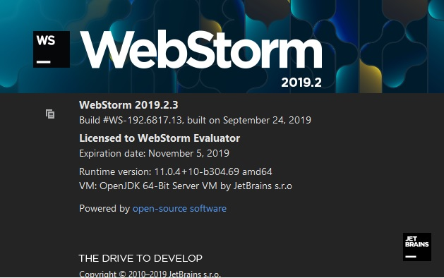

Главная страница
Первые шаги
Тестовая страница
Сайт делается с нуля в программе WebStorm
Вход
Имя
Пароль
Проверка формы

Проверка редактирования на странице GitHub
/*Пробное подключение Ява скрипт управление цветами сайта*/